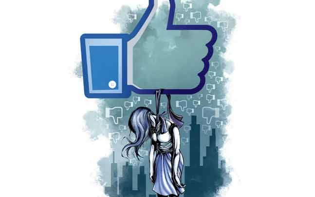

There's no longer doubt about the media's effect on the general population's perception, behaviours and emotions. Mass media act as agents of socialization that help to build and sustain attitudes and developed behaviours. Mass media act as agents of socialization that help to build and maintain attitudes and acquired behaviour. Through sensational, misleading and comical representations, the media contribute to mental illness stigma, using them to depict those with psychological conditions as well as presenting misleading statistics on mental illness.
The media has undoubtedly highlighted key social movements and encouraged fundraising for many good causes; but it has also acted as a medium for less productive and often disturbing incidents at both individual and societal levels. The true relationship between media consumption and mental health is a relatively recent field of research and a dynamic one considering the ever-changing technological environment. While some research points to the positive outcomes and results of our online experiences, the opposite view seems to be supported by a growing research base.
How accurately certain individuals are represented in the media? Are journalists "right" having mental illness?" The response seems to be no. This stigma has taken a number of forms. Several times the degrading term is used by journalists. Sometimes, the stigmatizing language was used in quotes from relatives, friends or police officers.
Concerns of mental health persist in today's society. One out of every four adults are said to have a mental disorder. However mental health problems are still misrepresented when represented in film and television shows. Media misrepresentation of mental health conditions is relatively frequent and is due in part to misinformation and representation of mental health conditions.
For those involved in reliability and the stereotype often associated with mental health issues in the entertainment industry, initiatives aim to help them get it right. Progress has been made in strengthening the perception of mental health conditions on television and in films, which has helped reduce the mental health stigma. The more people become informed of how others cope with these problems, the more we begin to understand what is really changing.
People's opinion and attitudes towards mental illness is largely tabloid-dependent, and it could serve as risk factors for certain kinds of mental illness. The movie films and the cinemas can be used as a psycho-educational way. The Indian media has enormous potential as this can affect public perception, and can be used as a progressive agent to eradicate mental illness stigma and negative opinions. Propagating sensationalism towards mental illness is a major issue which demands significant attention.
Modulation of Representations
Media misrepresentation of mental health conditions is relatively frequent and is due in part to misinformation and representation of mental health conditions.News articles are sometimes exaggerated with sensational depictions of violent assaults and killings alleged to have committed by people with psychiatric disorders. Quite popular in television shows or films are characterizations of people suffering from mental disorders as violent and unstable, as perpetrators or as who have yet to hold down a job. What is prominent in television shows is not only the link regarding violence and people suffering from mental disorders, but also the tendency to take blame for the controversies and tragedies associated with mental disorders.
“Stigma by itself has to be recognised as a symptom of mental disorder - not only an impact”
Suicide Rates in Terms of Media Portrayal
There is evidence to suggest that particular style of reporting and presenting suicide in the mass media may contribute to increased suicide rates in vulnerable individuals. Currently the opinion is that prominent media show of suicide reports results in a substantial increase in suicide attempts, especially among teenagers and young adults, within the coverage area of the media outlet. The film industry has lost Sushant Singh recently. Unfortunately, our mental health conversations are brushed under the carpet in our society and we have not been encouraged to talk about it or ask for support, in fact during the coverage it was not sensitive handled and transformed into a ‘witch-hunt’ style of reporting forgetting every media ethics possible in the book.
 While irresponsible reporting of suicide can lead to increases in “copycat” suicides, a damaging influence is a perpetuation of stigmatizing attitudes toward people experiencing suicidal thoughts or behaviors, or toward people who have died by suicide.When covering suicide, media must resist generalizations based on little facts and reject catchy, sensational yet misleading phrases such as "farmer suicide epidemic" or "the world's suicide capital;" etc. Glorification of the victims of suicide as martyrs can enable vulnerable people to replicate actions in order to gain public adulation. Highlighting the negative consequences of intentional self-harm can discourage potential attempts. Repetitive coverage about a celebrity suicide should be avoided as sensitive personalities may grow enhanced suicidal thinking about being inundated and overloaded with information about a particular suicide.
Stigma around Cinema
Some of the human mind's most vivid and intimate portrayals are portrayed in films— that is, when the scripts get the information right. Too many films can stigmatize or misrepresent mental health issues, making characters with a disorder look different from everyone else. As a result, people who are personally struggling with these problems on a regular basis may feel harassed.
Depression Stigma
 In terms of mental health, social media seems to be the cause and the cure. While many people share their story of mental health issue and treat themselves online, it appears to be also one of the major triggers - Youth reporter.
In terms of mental health, social media seems to be the cause and the cure. While many people share their story of mental health issue and treat themselves online, it appears to be also one of the major triggers - Youth reporter.
The growth and acceptance of social media across the world was particularly identified. Though it may serve as a way of making friends and gaining social support, some individuals may experience stress. Since social media platforms are among the platforms with a significant quantity of users most commonly accessed. Several studies have associated the use of social media with decreases in subjective mood, sense of well-being and life satisfaction Passive use of social media content, as opposed to active contact, has been related to decreased bonding and increased insecurity. One theory is that exposure to highly idealized peer images on social media evokes emotions of jealousy and the false impression that others are living happier lives. Such envious feelings can then slowly lead to a sense of identity-inferiority and depression.
“If social media controls you and is robbing you of your freedom and good emotional energy chances are you're addicted and it's time to find another hobby.” ― Germany Kent
Rise of Cyber Crime
Cyberbullying is a growing public health issue that has had many negative impacts. Victims show higher rates of depression and suicidal ideation, as well as increased levels of emotional distress, outsourced aggression and truancy relative to non-victimized peers. Although a lot of media coverage has concentrated on its goals, research has shown that cyberbullying perpetration is often correlated with adverse effects on health.For example, teenage girls who are cyberbullying others have increased levels of depression and anxiety compared to uninvolved peers. Sending or receiving overtly sexual material–Emails, photos or videos are called sexting. The downside, is the flexibility of which this content can be misused, as it can be used for bullying, cybercrimes such as pornography, the effects of which are severe, such as the victim's anxiety, depression and even suicides.
With the advancement in technology and increased accessibility of the internet, cybercrime and cyberbullying are simultaneously on the rise.Media and mental health problems connect in many ways and are connected in a complex way. For raising the stigma of mental illness in the general public, reliable knowledge and correct language about mental illness is important.Media has played a positive role in the advancement of mental health, conveying reversibility of psychological disorders and stressing the importance of family and social help to rehabilitation. However, much needs to be done to enhance the representation of the mentally ill. It must be understood that the media operates solely for educating and entertaining, and as such the purpose might not be in line with a health care professional. Consequently, the valuable media resource in the form of broad range should be used as an ally rather than as an obstacle to provide the patients with the necessary benefits.
Click Here to go to our survey revolving around the impact of the portrayal of mental disorders and also seeks answers to the approach and sensitivity to mental issues by the media and entertainment industry.